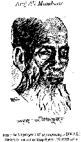

|
Prof. Ajoy Roy's
Article page
Recent
News:
২০১২
সালের একুশে পদক পেলেন অজয় রায়

২০১১ সালের বাংলা
একাডেমী পুরষ্কার পেলেন অজয় রায়
Bangla Academy Fellowship 2008 award
bestowed on Ajoy Roy
বাংলা প্রবন্ধ:
মুক্তমনা ব্লগে সাম্প্রতিক কিছু বাংলা প্রবন্ধ


Response :
Asim K. Duttaroy
[Download
Bangla font
from here]
যে আগুন ছড়িয়ে গেল সবখানে (ড.
খন্দকার মোশারফ হোসেনের দুর্নীতি)
বাংলাদেশের শিক্ষা
ব্যবস্থা নিয়ে কিছু কথা
এনজিও বনাম বর্তমান সরকার
শান্তা
নামের মিষ্টি মেয়েটিকে আমি চিনতাম
ঘুরে এলাম মংগার দেশ থেকে (১
| ২
| ৩)
ভাষা আন্দোলনের সূচনালগ্ন এবং একুশের প্রথম সংকলন
English
Articles:
 Is
Barack Obama Black? Nov 8, 2008
Is
Barack Obama Black? Nov 8, 2008
Atrocities on Hindu Minorities continue Sept 10, 2008
Hatiar
dal do July 01, 2008
Taslima
Nasrin's present plight: A conversation with me March 10, 2008
Will the Government
show magnanimity and release DU teachers? Jan 18, 2008
A tribute to Justice Sobhan
Jan 01, 2008
[SIDR]
Horrifying Experience: A visit to coastal areas Dec 29, 2007
Mrs.
Benazir Bhutto assassinated Dec 28, 2007
We are imprisoned in our own houses
August 24, 2007
An
Hour with Dr Wajed Mian at the Hospital Jul 22, 2007
Jahanara
Imam Memorial Lecture (upon receiving the medal on MM's behalf)
June 28, 2007
The Country
Plunges into Deep Crisis Dec 12, 2006
Has
the President acted on his own or is it a part of a grand design schemed by
BNP-Jamat evil alliance? Nov 11, 2006
President Assumes State Power Part II : Is it constitutional or a
constitutional coup de tat? Oct 31, 2006
An
Appeal to the President Oct 27, 2006
An open letter
to Justice K M Hasan Oct 24, 2006
Shouldn’t the CEC
Resign ? (Part 1) May 29, 2006
Nepalese people still on the streets defying curfew and atrocious police
actions April 25, 2006
King
Jnanendra bows down to Nepalese mass demands, but Nepal is still burning
April 24, 2006
A Day with Dr. Austin Dacey
11 March,
2006
Bangla
Bhai Surrendered to the Police 07 March, 2006
Moulana Sayekh Abdur Rahman
Finally Surrendered 02 March, 2006
US Congressman Joseph Crowly
visits Bangladesh
[Part-1 |
Part-2] Ajoy Roy
25 Feb, 2006
Fida
Husain Apologizes 15 Feb, 2006
'Fatowa' - An Islamic Institution
or a Weapon of Social torture? [Part- 1 |
Part-2 |
Part-3| Part-4] 19/01/06
Telephone
Taping : A sword hanging over Human rights 15/12/05
Yadab theory still pursued 11/12/05
Islamic Fundamentalists Strikes Udichi again at Netrokona 09/12/05
Shahadat Choudhury Expired: A Tribute 02/12/05
Islamic Fundamentalists Strike again 30/11/05
Journalist
Enayetullah Khan breathed his last 12/11/05
Fatowa an
Islamic Institution or a weapon of Social torture?
30/10/2006
Entire
Nation Threatened by Series of Bomb Blasts 17/08/05
From
Ayodhya to London: Terrorism has same language 09/07/05
Lord Eric Avebury slates Bangladesh HC in UK 27/06/05
Kibria Killing Episode:
Kibria Family took position on the road
04/02/05
AMS Kibria Killed by Grenade throw: 30/01/05
An evening with the family of late Dr. Humayun Azad 16/01/05
Jail killing day observed: Country is
pathetically divided even on this issue
Jail
Killing Tragedy [Part1
Part2
Part3 Patr4]
The alliance government starts
celebrating 3rd anniversary of its assuming state power.
Jainiul Abedin Commission Report Submitted to the Government
Sectarian Violence Continued- Shias in Pakistan targeted again
[Part-1
Part-2 Part-3]
So called Physics Teacher- a Practicing Talebanist
Stephen Hawking revises his opinion about black holes
Three
DU Teachers threatened
Former
VC of Viswa Bharati arrested on charge of forgery [ More
on Viswa Bharati Scandal ]
Proshika Episode:
Proshika
Episode 1: Dr. Kazi Faruk Ahmed ' rejoinder
Proshika
Episode 2 : Proshika Chief arrested
Proshika
Episode 3: Proshika Chief taken to Police remand
Proshika
Episode 4: Proshika Vs Khaleda-Nizami Government [Bangla]
Proshika
Episode 5: its Chief faces sedition charges
Proshika
Episode 6: Harassment against Dr. Qazi Faruque Ahmed contin
Proshika
Episode 7: Dr. Qazi Faruque Ahmed granted bail in sedition
Rajshahi
University teachers threatened by BNP leaders
Late
Night News: Khulna Press Club President assassinated
Bangladesh
minority cleansing continues unabated: "Bicharer Vani Nirabe Nivrite
Kande"
A
Journalist of German Radio forced to leave Bangladesh under threat
Indian Election:
India's
PM designate: Dr. Manmohan Singh
Sonia
Gandhi declines nomination of Indian Premiership
CPIM
disappointed people of West Bengal
BD
secularists rejoice as BJP fails to retain Power
Indian
Election: BJP accepts defeat
Meeting
with Dr. Humayun Azad
1. Best
Bakery case in the news again 2. Best
Baker case again-2
Terrorism:
Bangladesh style: Ahsanullah
Master, MP brutally killed in brushfire
Communal
Terrorism Flares up in Pakistan: Shia Mosque Attacked again
Christian-Muslim
Riots in Nigeria
Bangladesh
Minority Situation: Process of grabbing minority property 2. Bicharer
Vani Nirabe Nivrite Ka(n)de: Grabbing of minority Property
Tale
of Ahmedias and Hindus in Bangladesh: Ahmediahs and Minorities
15th August, Should we mourn or rejoice ?
Archeological Findings of Ayodhya Ruins
Dr. Badruddoza Choudhury man handled
A horror story of Banskhali:

|
Minority repression continues in
some form or other. Here is a horror story that
must have surpassed many horror stories of
Alfred Hitchcock! In a remote village of
Bangladesh called Sadhanpur in Chittagong eleven
members of a Hindu family were burnt to death.
Can you imagine? Here is the story. ... ....(Read
more) |
A tribute- Justice Debesh Chandra Bhattacharya Passed away
Peacefully (part1, part2)
Dr. Humayun Azad, My Colleague, Stabbed fatally

Gujrat Riot victim takes shelter in West Bengal
(part1, part2)
Killing of a noted Journalist- Manik Saha
(part1, part2)
Martyr Intellectual day 2002- Homage to my martyr colleagues.
(part1, part2)
Gopal Krishna Muhari Murder case
(part1, part2)

Introducing Shahriar Kabir - A Humanist By Dr.Ajoy Roy
Buddhist Monk Killed by BNP cadres:
 |
Attempt is being made to divert
the course of killing of Buddhist monk at Raozan.
For this purpose a new story behind the killing
has been fabricated- i.e. the police is trying
to establish that real reason behind the killing
is land dispute. However, according to his first
FIR, Sulal Barua alleged that BNP cadres
belonging to S. K. Choudhury faction c., ... ....(Read
more) |
"Annada
Prasad" Cries in Silence & Anguish
 |
Bhola a remote district from the
capital surrounded by on all sides rivers and
riverines, on the south lies the Bay of Bengal,
is made of coastal plain land not much above 5
ft from sea level. On the eastern side the
mighty Meghna flows into Bay, whereas on the
north and western side river Tetulia, a branch
of Meghna falls into Bay. From this point of
view it is an island floating on the bay.The
district administration extends main Bhola and a
few islands (chars) including Rajapur, Gangapur,
Charpatila, ....(Read
more) |
Kashinagar - "The
cave"
 |
This is a sad story of torture
on women in caves prepared under earth. A group
of about twenty miscreants of the locality
called Kashinagar excavated the cave on the
barrage of a river along its bank. A reign of
terror has been unleashed by juvenile group of
terrorists in Kashinagar union under Chauddagram
upazila in the district of Comilla. This reminds
me the dreadful days of Pakistani occupation
period in 1971. The Pakistani barbarians in
uniform were entrenched along the border areas.
The trenches were well fortified- they look like
foxholes from outside. ....(Read
more) |
Repression on minor girls continues: This time a Jamat leader
is involved
Bicharer Vani
Nirobe Nrivite Kande: Agony of Purnima and Shitanshu
Agony of BD
Minorities Continues: Laksham Episode
Rajufa,
a Child at Rajshahi Raped: Episode 4
Rajufa,
a Child at Rajsahi Raped: Episode 3
Rajufa,
A Child at Rajsahi Raped: Episode 2
Mother
raped repeatedly in front of the daughter At Bhola
Mahimas
are still crying
Cleansing
at BSS continues
Repression
on minorities continuing: Christians are now target
After
Shariar: Anti State Charge against Proshika Employees.
Christian
village under attack
Atrocities
on Minorities Continue: A Christian Village under attack
A
Note from Shahriar Kabir
Shariar
Kabir set free
Mukto-mona
is under the radar screen of Islamists
Reaction
of Govt. Paper to our activities
Rajakars
and Talibans: two hated words
A
Citizens' Committee Formed for the Protection of Right of Weaker BD Nationals
BD
Election and its Fall out: Bhola cries in agony
BD
Election and its Fall out Part II A: Post election Atrocities against BD
minorities
BD
Election and its Fall out: Latest position of Shariar Kabir
BD
Election and its Fall out: AI on BD minorities & Shariar Kabir
BD
Election and its Fall out: Arrest of Shariar Kabir
BD
Election and its Fall out: Internationalization of BD Minority issue
Religious
minorities assaulted: this time in Pakistan
BD
election and its fall out - Response to Shabbir Ahmed
BD Election: Fall of Awami League: An
Election Analysis :
|
|
Here is an article on BD
election (Part I) based on my own personal
observation and experience. You will be
horrified to learn the extent of terrorist and
anti-social activities directed against a
religious minority community. In here I have
described the pre election events, in part II
will follow the story of post election.A
landslide victory of Bangladesh National Party (BNP)
& 4-Party alliance led by Begum Khaleda in
the general election ... ....(Read
more) |
Bicharer
Vanee Nirabe Nivrite Kande: Hindu fundamentalists are on Christian minorities
Bicharer
Vanee Nirabe Nivrite Kande: Forcible occupation of minority properties
continues in BD
Bicharer
Vanee Nirabe Nivrite Kande: miserable plight of religious minorities continues
in BD
Bicharer
Vanee Nirabe Nivrite Kande: Religious Minorities are on the flee again
1971 :
Remembering 25th March: Darkest Night of Our
National History :
 |
Yes, it is the darkest night of
our national history. 25th March of 1971, just a
day before our National day, the day of
independence, is still a painful day in my
memory. The events, history's most heinous crime
committed by the Pakistani army on the night of
the 25th March, still haunt me. I had the rarest
opportunity to go through the fearful and
horrible experience of glimpses of a genocide.... ....(Read
more) |
Read special issue of Mukto-mona on 1971
Others:
A Letter To Shabnam Nadiya
|
Dear Nadiya, As you know, I am
just a curious occasional reader of Mukto-Mona
group to which my son Avijit introduced me.
Sorry for late reaction on your touchy article
'Why I remain an Atheist' which grew out of your
bitter personal experience. How I appreciate
your feelings, sensitiveness and frankness. ... ....(Read
more)
|
Aroj Ali Matubbar- Rationalist
Philosopher of Rural BD
|
 |
I
would not like to elaborate the concept of Rationalism in front of this
august body and the learned gathering. As I understand rationalism is just
not a belief or a doctrine, it is a system of analytical method of reaching
the truth based on reason, logic and scientific facts. In classical sense,
rationalism could be defined in any of the following ways: .... (Read more)
|
Comrade Ila Mitra:
A tribute By Dr.
Ajoy Roy
 |
Ila Mitra, the legendary peasant
leader of undivided Bengal, a veteran leader of
the communist movement in the sub-continent, a
dedicated friend to the cause of our war of
liberation in 1971, breathed her last in
Kolakata (Calcutta) on Sunday, 13th October
afternoon at PG hospital, Kolkata (Calcutta),
West Bengal. It was learnt from ETV-Calcutta TV
channel that following a severe heart attack
some time back she had been under treatment in
the PG hospital. .... (Read more)
|

About the Author:
Prof. Ajoy K. Roy, a reputed scientist of
high esteem, studied in Bangladesh and in UK and took his Ph.D. in Physical
Chemistry from Leeds University. With his initiative an advanced center of
Solid State Physics and crystallography was established in 1969 under the
sponsorship of UNESCO. His work led to the discovery of some fundamental
process in radiation chemistry of aliphatic and amino acids and their salts.
The process of dissociative electron capture and the subsequent fate of
electron is considered to be his major contribution as a scientist. He has
been invited twice by the Nobel committee to nominate candidates for Nobel
prize in 1998 and in 2001.
Socially conscious Prof. Roy, since his
student life, participated in all progressive movements including Language
movement of 1952, Mass Movement in 1969, and Non Co-operation movement of 1970
--all these finally culminated in his participation in the 1971 War of
Liberation of Bangladesh as a freedom fighter. After Liberation Prof. Roy was
the General Secretary of the Asiatic Society of Bangladesh in the 1972-73
period, succeeding Dr. Ahmed Sharif.
Prof. Roy, as a secular democrat believes
in rationalism and secularism. As an ardent activist of Human Rights he has
participated in most movements against Human Rights violation in Bangladesh.
|


{kind=link}